【サカつく2026】リアクション強化が止まらない!!新SP「ギマランイス」は引くべき？プレミアムSP選手スカウト評価

2026年7月29日更新のプレミアムSP選手スカウトでは、ブルーノ・ギマランイス、ハフィーニャ、ロドリゴ、ブレーメルの新SP選手4名が登場しました。全員がリアクションポリシーで、同ポジション・同プレイスタイル内では最上位クラスの総合力を持っています。なかでも注目は、ワールドSP選手として初の「ハードマーカーⅡ」を持つブルーノ・ギマランイスです。
結論：リアクション最強編成を目指す人向け
今回のガシャは、「セレソン'70」を採用したリアクション最強編成を目指す人にとって価値があります。ギマランイスはDM・ハードマーカーⅡで総合力トップ。ブラジル国籍かつコンボ条件にも対応し、守備的DMの最上位候補です。
ただし、「セレソン'70」の中心となるペレ、ヴィニシウス、エデル・ミリトンを未所持なら、2026年8月12日まで開催中のハーフアニバーサリーガシャを優先するべきです。すでに主要3名を確保済みで、残りのポジションまで最高クラスへ更新したい人は、ギマランイスを狙う価値があります。
ハフィーニャ、ロドリゴ、ブレーメルはいずれも既存選手で代用しやすく、ギマランイス以外を目的に深追いする優先度は低めです。開催期間が長いため、8月12日以降の新ガシャ情報を確認してから判断しても遅くありません。
ガシャの注目ポイント
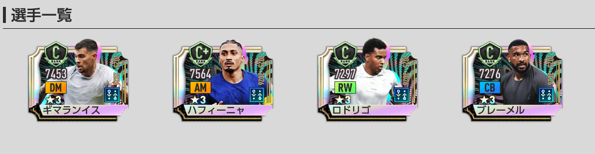
- 開催期間は2026年7月29日13時00分～2026年8月26日10時59分。
- ★3選手の排出率は5％。
- 排出される既存★3選手は、2026年6月23日までに登場した選手のみ。ウスマン・デンベレまでが対象。
- 3000RBの「1回限定★3確定10連ガシャ」は10体目が★3確定。ただし、確定枠にピックアップ確率は設定されていない。
- 3000RB限定10連の1～9枠目は、★3確率5％かつピックアップ確率あり。
- 通常タブの100RBシングル、300GBシングル、3000GBの10連は、各枠★3確率5％かつピックアップ確率あり。
- 通常10連の10枠目は★2以上確定で、★2確率95％・★3確率5％。
- 開催終了後、今回のピックアップ4名は通常のSP選手スカウトに追加されない。
- プレミアムSP選手スカウトメダルは、期間終了後に1枚につきエクストラコイン5枚へ変換。
ガシャ排出確率
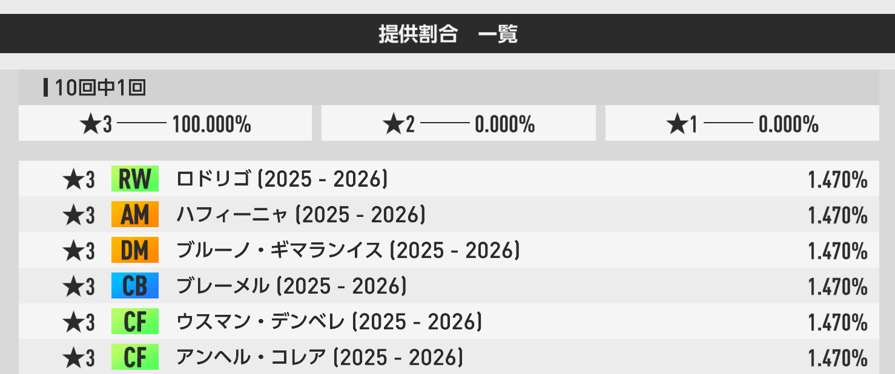
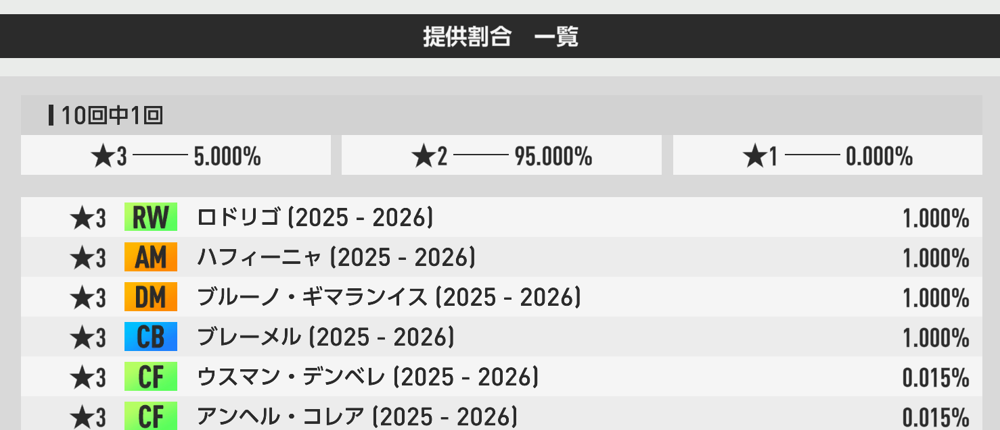
3000RBの★3確定枠は「新SP確定」ではない
10体目は★3確定ですが、確定枠にピックアップ確率は設定されていません。ギマランイスなどの新SP4名を狙う場合は、1～9枠目や通常タブのピックアップ枠も含めて考えましょう。
おすすめ度Tier表
リアクションDM・ハードマーカーⅡの現状最強格。「セレソン'70」の最強編成を目指すなら最優先。
高総合力・希少スキル・優秀なアビリティ構成。ただし、恒常★3SP「ジョアン・ペドロ」で役割を代用可能。
リアクションRWの総合力トップ。セレソン'70ではスーパーサブ候補だが、代用選手が多い。
同条件内では高性能だが既存CBで代用しやすく、セレソン'70の指定プレイスタイルにも合わない。
新SP選手4名の性能評価
P0401
ブルーノ・ギマランイス
基本情報
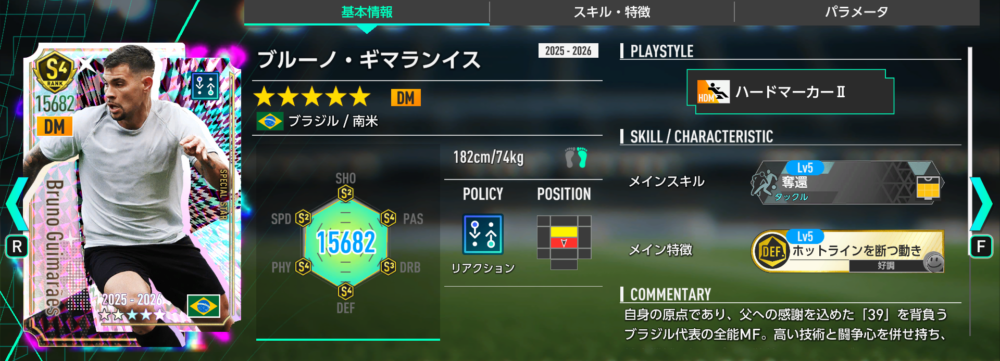
ステータス
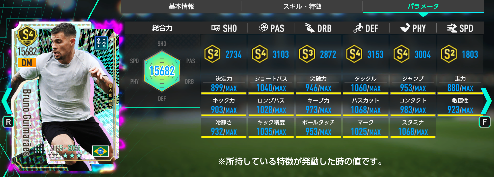
スキル・特徴
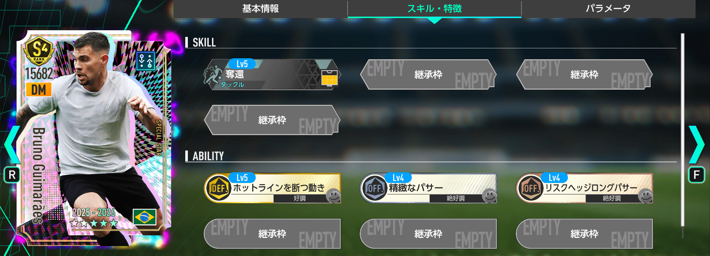
初期総合力は全SP選手404人中8位、リアクション99人中4位、DM55人中1位、ハードマーカー18人中1位。ワールドSP選手として初のリアクション・ハードマーカーⅡであり、同タイプの現状最強格です。
金のフォーメーションコンボ「ゴーデンゾーネン'95」と「セレソン'70」の発動条件キー選手として採用可能。特に「セレソン'70」の最強編成を目指す場合、ブラジル国籍のDMかつハードマーカーⅡという条件面で高い価値があります。
所持アビリティ「ホットラインを断つ動き」はSSRの特連カードからのみ継承可能で、最初から持つSP選手も恒常★3SP「ファンダイク」に続いて2人目。総合力だけでなくアビリティ面でも高評価です。
ただし、コンボ発動だけなら無料チケットで獲得できるJリーグSP「西谷優希」や「山口蛍」で代用できます。また、ペレとヴィニシウスを未所持なら、まずハーフアニバーサリーガシャを優先しましょう。
P0402
ハフィーニャ
基本情報
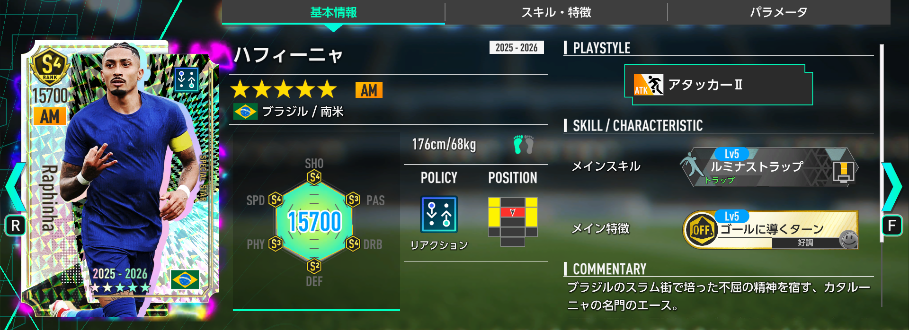
ステータス
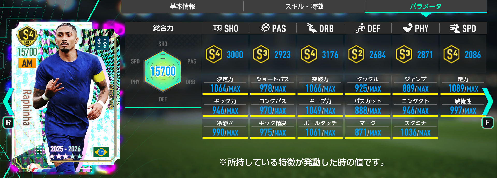
スキル・特徴
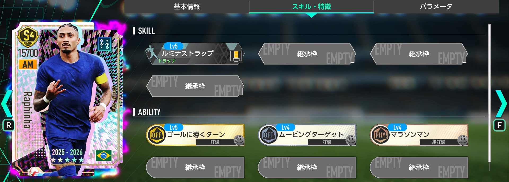
初期総合力は全SP選手404人中3位、リアクション99人中2位、AM52人中2位、アタッカー34人中2位。リアクションAMアタッカーでは総合力1位です。
ポリシー・ポジション・プレイスタイル・国籍がすべて同じ恒常★3SP「ジョアン・ペドロ」で役割を代用できます。一方、所持スキル「ルミナストラップ」を持つ選手は期間限定MLSガシャの「マルコ・ロイス」に続いて2人目で、希少性は高めです。
金ランクのアビリティ1つ、好調トリガー2つ、絶好調トリガー1つ、継承枠3つを持ち、性能面ではジョアン・ペドロの明確な上位です。ただし、代用できるためガシャ全体での優先度は高くありません。
P0403
ロドリゴ
基本情報
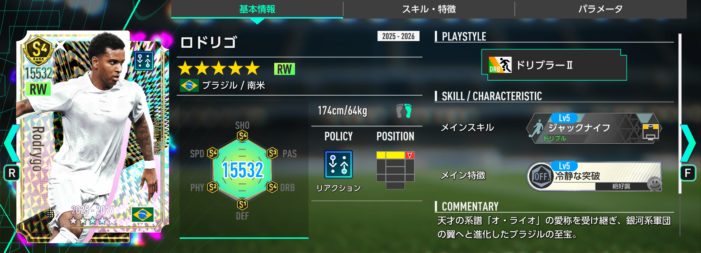
ステータス
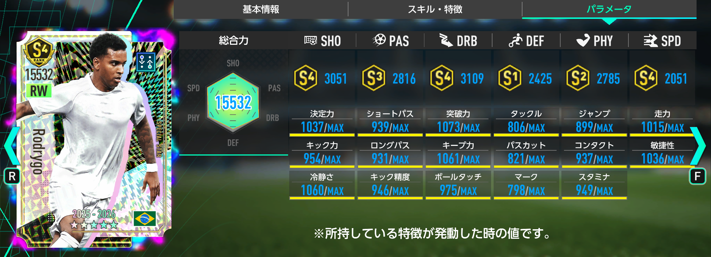
スキル・特徴
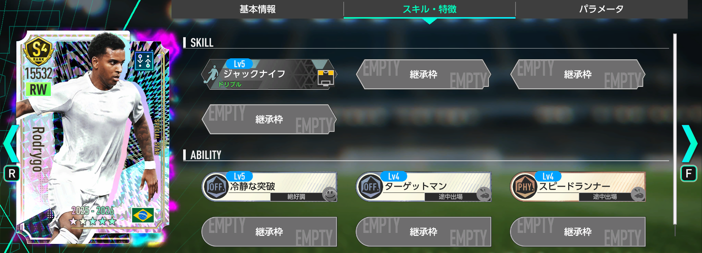
初期総合力は全SP選手404人中29位、リアクション99人中9位、RW26人中4位、ドリブラー50人中4位。リアクションRWでは総合力1位です。
恒常★3SP「ブラヒム・ディアス」、★2SP「フランシスコ・トリンコン」、初心者ガイドミッションの★3SP「リオネル・メッシ」で代用できるため、役割の希少性は高くありません。
発動トリガーは絶好調1つ・途中出場2つで、スタメン運用ではブラヒム・ディアスの方が扱いやすい構成です。一方、「セレソン'70」ではブラジル国籍を活かし、途中交代のスーパーサブ候補として採用価値があります。
P0404
ブレーメル
基本情報
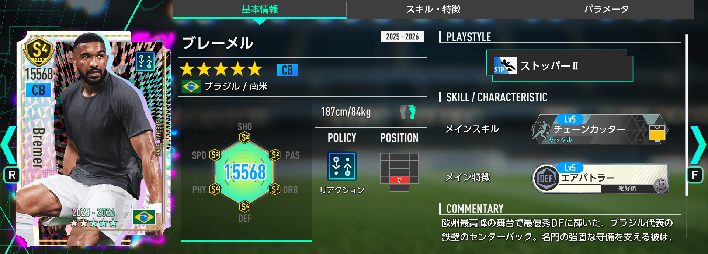
ステータス
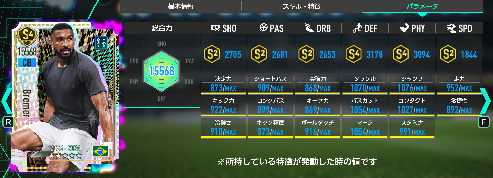
スキル・特徴
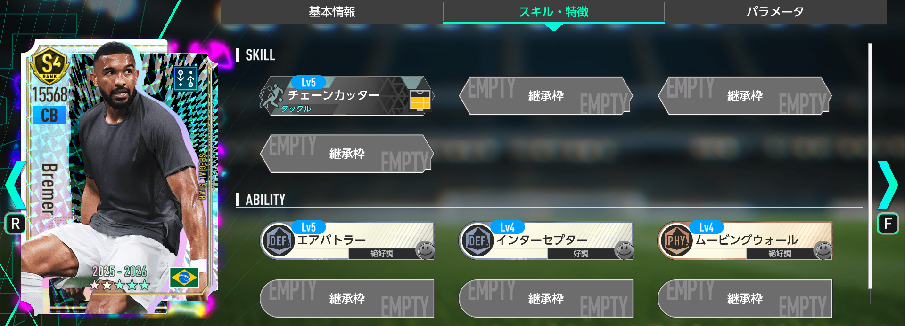
初期総合力は全SP選手404人中41位、リアクション99人中14位、CB60人中7位、ストッパー38人中2位。リアクションCBストッパーのワールドSPでは総合力1位です。
ただし、恒常★3SP「アレッサンドロ・バストーニ」、旧JリーグSP「植田直通」、★2SP「ゼノ・デバスト」で代用可能。アビリティ構成もバストーニと同じで、明確な差別化要素は少なめです。
さらに「セレソン'70」が要求するCBのプレイスタイルはスプリントCBⅡです。最強編成を目指すなら、ブレーメルよりハーフアニバーサリーガシャのエデル・ミリトンを優先しましょう。
このガシャを引くべき人・見送ってもよい人
引くべき人
- リアクションの最強編成を作りたい
- 「セレソン'70」を最高クラスのSP選手で組みたい
- ペレ・ヴィニシウス・エデル・ミリトンを確保済み
- リアクションDMをギマランイスへ更新したい
- ブラジル国籍の最強チームを目指している
見送ってもよい人
- ハーフアニバーサリー主要3名を未所持
- リアクション編成を使う予定がない
- コンボ発動だけならJリーグSPで代用できる
- ハフィーニャ・ロドリゴ・ブレーメルの代用選手を所持
- 8月12日以降の新ガシャ情報を確認したい
まとめ
今回のプレミアムSP選手スカウトは、ブルーノ・ギマランイスが最大の目玉です。リアクション・DM・ハードマーカーⅡとして現状最強格で、「セレソン'70」の最強構成を目指すプレイヤーには高い確保価値があります。
ハフィーニャとロドリゴは高性能ですが既存選手で代用しやすく、ブレーメルは「セレソン'70」の指定プレイスタイルと噛み合いません。4名の優先順位はギマランイス ＞ ハフィーニャ＝ロドリゴ ＞ ブレーメルです。
結論として、ペレ・ヴィニシウス・エデル・ミリトンを確保済みで、リアクション編成をさらに強化したい人は引く価値があります。それ以外の人は、8月12日以降の新ガシャ情報を確認しながら慎重に判断しましょう。